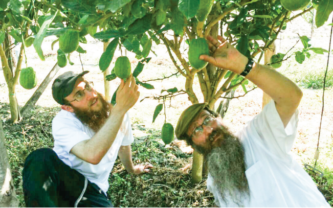

The Esrogim That No Borders Could Hold Back
Chabad custom is to use an esrog from Calabria (Genoa). Chassidim faced many a challenge over the years in obtaining these esrogim, that went beyond high prices. * Even when Europe was on fire, these esrogim continued to break down iron walls and to reach Chassidim who pined for them with love. * Stories from our Rebbeim and Chabad Chassidim who made supreme efforts to obtain an esrog from Calabria.

For example, as far back as the Alter Rebbe, he was particular about saying a bracha over an esrog from Calabria, “until one time there was a great war in the world and they heard that merchandise from Italy would not be allowed in, and he wanted to send someone to Genoa to buy an esrog for him.”
What is special about esrogim from Calabria is their pedigree. The Rebbe quotes in a letter that when it says, “from the fat of the land will be your dwelling place” (the blessing that Yitzchok gave Eisav), it refers to Italy of Greece. The Alter Rebbe said that when Hashem told Moshe Rabbeinu “and take for you a beautiful fruit etc.,” they sent messengers on a cloud to bring esrogim from Calabria.
Therefore, Chabad Chassidim throughout the generations had the custom to be particular and say a bracha over an esrog from Calabria, as is brought in the Seifer HaMinhagim: We have a tradition from the Alter Rebbe, author of the Tanya and Shulchan Aruch, to be particular about esrogim from Calabria-Genoa for a reason known to him.
The following stories testify to the prodigious efforts made by the Rebbeim to say a bracha over an esrog from Calabria.
SEVEN HAKAFOS IN HONOR OF THE ESROGIM
It was Tisha B’Av 5674/1914 when Germany declared war on Russia, thus beginning World War I. Everything changes during a war. Even things that were routine in peacetime are not a “given” during war.
Two months later, Sukkos approached and in Lubavitch they had not been able to obtain an esrog from Calabria. There were three non-grafted esrogim that were sent from Eretz Yisroel, but having to change from the custom in Lubavitch to say the bracha over an esrog from Calabria caused great anguish to the Rebbe Rashab to the point that it affected his health. As a result, the Rebbe could not daven with the tzibbur on the first days of Sukkos.
This version appears in the memoirs of Rabbi Yisroel Jacobson, but Rabbi Yehuda Chitrik maintains regarding that year, that they did have an esrog: “They hardly worried about esrogim for Sukkos because the esrog merchants who sold Yanover (Calabrian) like R’ Chaim Yisroel Sistrin of Vitebsk and his partners R’ Koppel Seligson and Rivlin were in Italy before the war and had already made sure to deliver esrogim from Genoa (Calabria) and esrogim from Eretz Yisroel to Russia, like every year.”
R’ Chitrik remembered the lack of esrogim and the health problem from another year, 5676/1915:
“Esrogim for Sukkos were very limited and in short supply because great effort was needed to obtain esrogim from Calabria. Although Italy had abrogated the treaty it had with Germany [German was against Russia], it was wartime and the roads were dangerous. Only four esrogim reached Lubavitch a few days before Rosh Hashana: one esrog was won in a raffle by the elder Chassid Cooper from Moscow; one was won by the shochet, R’ Shlomo Chaim [Kitein, the shochet in Lubavitch] and this esrog was designated for the public, yeshiva bachurim and Chassidim; and two esrogim went to the Rebbe Rashab and Rebbe Rayatz.
“After Yom Kippur and all the days of Sukkos, the Rebbe had a toothache and he had a handkerchief tied around his jaw. Rebbetzin Shterna Sara [the wife of the Rebbe Rashab] said the toothache was a result of his worry over whether he would get an esrog from Calabria.”
In the notes of Rabash, the Rebbe’s grandfather, who wrote a detailed diary about his stay with the Rebbe Rashab for Sukkos 5676, no mention is made of any problems in obtaining esrogim and no mention that the Rebbe Rashab did not feel well. As the Rabash wrote in detail and soon after the events occurred, it supports Rabbi Jacobson’s position.
[Rabash’s close connection and his being privy to what was going on in Beis Rebbi, we see from the following excerpt from his diary from 5676:
All the days of Sukkos I took the lulav and esrog in the Rebbe’s sukka because I had asked him Erev Sukkos toward evening about using his lulav, and so it was. On Hoshana Raba before reciting Hallel, I asked to say Hallel on his other lulav, and he told the assistant Mendel to bring me the lulav and so it was. I stood on the eastern side, two places away from the Rebbe, no more, and said Hallel.]
There was another time when an esrog from Calabria arrived in Lubavitch at the last moment, which is recounted by the mashpia, Rabbi Menachem Zev Gringlas. When the esrog for the Rebbe Rashab arrived, there was no end to the Rebbe’s joy. The Rebbe took the esrogim, placed them on his table, and made seven hakafos around the table in order to express his great joy.
ONE ESROG IN TOWN
The war continued in the years to come and was followed by the Communist Revolution. These upheavals ignited a civil war in Russia. For several years, Russia became one big battlefield.
Not surprisingly, at that time, when the roads were difficult, it was almost impossible to import esrogim from Italy. For Tishrei 5679 it turned out that in the entire city of Rostov, where the Rebbe Rashab lived at the time, there were no esrogim. At the last moment, a day before Yom Tov, an esrog from Calabria arrived that had been sent by the wealthy R’ Shmuel Gurary. How had he managed that?
It turned out that R’ Shmuel lived in Odessa at the time and he paid a large sum of money to a businessman who traveled to Italy and asked him to get him an esrog from Calabria. Not long after, the businessman returned to Odessa with an esrog and declared it was from Calabria.
The esrog was sent from Odessa in Ukraine to distant Rostov by a special messenger, R’ Dovber Gansburg. The Rebbe Rashab was doubtful as to whether the esrog was actually from Calabria and spent two hours examining it until he decided that it was in fact from Calabria. Then it turned out that it was the last day when it was possible to cross the border from the Odessa area into Russia.
Not only Chabad Chassidim came to say the bracha on the esrog but all the Jews in Rostov came, for this was the sole esrog in town.
Throughout the holiday and Hoshana Raba too, of that year, the Rebbe was the chazan to recite Hallel and Hoshanos because he had the only esrog.
R’ Yisroel Jacobson tells in his memoirs about the conduct of the Rebbe Rashab with the esrog that year:
“The Rebbe allowed all of Anash to say the bracha on this esrog, but he did not allow anyone to shake it, not even at the time of saying the bracha, and not his son, Rayatz, either.
“He sat in the sukka from six in the morning until ten (allowing the people to come and make the bracha) and made various comments to people regarding the bracha. For example, when making the bracha, they should hold only the lulav and look at the esrog and only afterward, pick up the esrog. Likewise, he would ask whether hands were dry and asked that they try not to make him sit in the sukka every morning for such a long time before the davening, but it was hard to limit it, for everyone wanted to say the bracha on the dalet minim.”
Two Chassidim found it hard to forgo shaking the dalet minim, R’ Itche Masmid and R’ Avrohom Dovid Posner. They stood in the sukka and waited until everyone else went first in the hopes that then the Rebbe would allow them to shake it, but the Rebbe Rashab sadly said, “I cannot give permission to shake it as this is the only esrog.”
Apparently one Chassid was given permission, R’ Boruch Sholom Cohen, to whom the Rebbe signaled to do so while he was making the bracha.
ESROGIM UNDER BOMBARDMENT
The difficulty in obtaining an esrog in wartime was also experienced by the Rebbe Rashab’s son, the Rebbe Rayatz.
Erev Sukkos 5700/1939. Warsaw was being bombed and many Jews fled from place to place because of the nonstop bombardment by German warplanes. Despite the difficult and tense situation which entailed danger to life for the Rebbe and those around him, the Rebbe Rayatz continued to be concerned for every Jew, with the passion of Ahavas Yisroel that burned within him. During those days, he made sure to obtain an esrog for the gaon, Rabbi Yitzchok Zev (Velvel) Soloveitchik who was in Warsaw at the time. This was recounted at length in the book HaRav M’Brisk:
“On the eve of the holiday, they sent someone to inform Maran zt”l that there was an esrog for him sent by the Rebbe Rayatz Schneersohn of Lubavitch who lived at the far end of the city, a distance of a few hours walking from the lodgings of Maran zt”l. The walk was perilous since German heavy bombers were flying the entire time over the skies of Warsaw and dropping tons of bombs which devastated the ground on which they landed and sowed massive destruction.
“A bachur with a heart warm to Torah and mitzvos, from the Gerrer Chassidim, volunteered to go to the Admur Rayatz’s house, despite the danger, to get the esrog. Maran zt”l thought a bit and after considering the offer he was inclined to agree, offering the reason that if in this time of distress for Yaakov there was a Jew who was ready to give his life to fulfill a mitzva, he had no permission to prevent him from doing so.
“It was nine at night when the bachur left for the dangerous street in order to bring the esrog. He returned at four in the morning to the lodgings of Maran zt”l with the precious esrog.
“The bachur said that the area that the Rebbe Rayatz lived in sustained many attacks that night and the Rebbe had to flee from place to place because of it. Every time the bachur reached the place where the Rebbe supposedly was, he was told that just minutes before the Rebbe had left for another location. When he reached that address, he saw nothing but destruction as a result of a direct hit. After exhaustive searching from here to there and there to here he finally found the Admur Rayatz who took the precious esrog with him wherever he went as he fled the warplanes. The bachur then returned with the valuable treasure to the lodgings of the Rav of Brisk.”
Rabbi Yosef Wineberg, however, then a talmid in Yeshivas Tomchei T’mimim in Otvotzk, said that the author of that book erred or was misled as to the facts. Rabbi Wineberg says that he himself together with another bachur from Yeshivas Tomchei T’mimim were sent by the Rebbe Rayatz to bring the esrog to the Rav from Brisk. After a dangerous trip they arrived at the Rav of Brisk who asked them to thank the Rebbe Rayatz for looking out for him with mesirus nefesh (see sidebar).
To show how rare an esrog was that year, R’ Wineberg said that next to the home of R’ Meshulam Kaminker, one of the few who was able to obtain an esrog that year, an enormous line of 5000 people formed who came to do the mitzva.
MESIRUS NEFESH FOR HIDDUR MITZVA
The Rebbe MH”M was also moser nefesh to obtain an esrog specifically from Calabria.
It was in the middle of World War II, when the Rebbe and Rebbetzin were in Nice, France. The Rebbe wanted a mehudar esrog from Calabria. One day, he went to Rabbi Shmuel Yaakov Rubinstein and began to discuss with him the laws of whether it was possible to permit mesirus nefesh for a mitzva in general and hiddur mitzva in particular. As was his way, the Rebbe peppered their discussion with a plethora of sources and proofs this way and that, and in the end it seemed that the issue remained unresolved.
In the days following that discussion, Rabbi Rubinstein noticed that the Rebbe was not in the city. A few days later, the Rebbe appeared in R’ Rubinstein’s house with a radiant face and two beautiful esrogim, one as a gift for R’ Rubinstein. The only possible conclusion was that the Rebbe had somehow traveled via unconventional means, crossing dangerous borders to the orchards that were quite close to the front lines of the war, near the border with Italy, where he obtained beautiful esrogim.
ESROGIM AND CHASSIDIM DURING THE HOLOCAUST
Not only our Rebbeim but also Chassidim were particular over the years about saying the bracha on this type of esrog. This was the case during the Holocaust too, when Lubavitcher Chassidim made every effort to be able to say the bracha over a mehudar esrog from Calabria.
In Kovna, for example, Sukkos was approaching and within the hell of the Kovna ghetto, word got out that a “Jewish expert” would be arriving from Vilna with an esrog. In those crazy times, the Nazis appointed “Jewish experts” to oversee certain factories. Sometimes, these experts went to factories in other towns to give their professional opinion. The expert was always accompanied by German guards who, for some reason, looked away when these experts would transfer packages.
So word got out that an expert was coming with an esrog. It turned out that according to the schedule, the expert would have to return to Vilna on Motzaei the first day of Sukkos. The problem was that in that year, the first day of Sukkos was on Shabbos.
A complicated halachic question arose. Since the only day the Jews of Kovna would be able to say the bracha on the esrog was the first day, which was Shabbos, when we usually do not take the dalet minim, would it be permissible for them to say the bracha on this day?
This difficult question was posed to Rabbi Efraim Oshry who had to decide whether they could use the dalet minim on Shabbos. After much deliberation he left his p’sak open ended – not prohibited and not permissible! Many came to say the bracha in tears. Many of them figured this would be the last time they would be doing this mitzva.
Rabbi Oshry himself related the reaction he got from a Chabad Chassid who lived in Kovna:
“A Lubavitcher Chassid, R’ Feivel Zisman, may Hashem avenge his blood, told me, ‘I am fulfilling this mitzva without asking questions. I am willing to get Gehinom for doing this mitzva, because all my life I spent a fortune to buy a mehudar esrog and now, perhaps before I die, I am sure that doing this mitzva, the merit thereof, will stand by me on the Day of Judgment.’” [This story with the halachic response is printed in the book of responsa by Rabbi Efraim Oshry.]
Obviously, because of the war, Calabrian esrogim had a difficult time making their way to Eretz Yisroel. The only one who managed to get this kind of esrog in those years was Rabbi Eliezer Karasik, rav of the Chabad community in Tel Aviv, the only one in Tel Aviv and its environs to get one.
Throughout Chol HaMoed, all members of the Chabad community from all over Tel Aviv went to his house to say the bracha. From early in the morning, Anash in Tel Aviv and even from B’nei Brak and Ramat Gan, arrived at his sukka to say the bracha on the esrog while also getting a cup of coffee and cake.
Rabbi Moshe Yaroslavksy always told about the welcome that Anash and other Jews got at the Karasik house:
“The esrog would arrive before Sukkos and R’ Karasik made sure to immediately announce that he had a Calabrian esrog and all were invited to come and say the bracha on it. During Sukkos, you could see Anash all day, as well as Jews from other groups, going to his house from early morning in order to say the bracha on the esrog. He would stand and personally see to it that whoever finished saying the bracha would have coffee and cake in the sukka, for it is our custom not to eat something before making the bracha on the dalet minim.”
SMUGGLING ESROGIM BEHIND THE IRON CURTAIN
Over the years, it wasn’t easy to cross the Iron Curtain; all the more so to send religious items to Jews and the few Chassidim who were particular about observing Chassidic customs. The Rebbe used countless people who traveled to Russia for various reasons, to smuggle in religious items.
One of the problems was providing Russian Jews with esrogim from Calabria. This was no simple matter. Rabbi Reuven Matusof was someone who dealt with this over the years and he related:
As a shliach of the Rebbe in the Lubavitch European office from the years 5742-5752, I had the privilege of bringing Calabrian esrogim to Soviet Russia. It was all done with instructions I received from the director of the office, Rabbi Binyamin Gorodetzky. I would go to the airport in Paris and give the esrogim (between 10 and 20) to the stewardesses on Air France flights to Moscow. I would direct them to bring the precious cargo to specific addresses in Moscow where they reached those Chassidim who were particular about this custom.
“THE LUBAVITCHER REBBE CONCERNED HIMSELF ABOUT AN ESROG FOR ME”
In the body of the article it says how the Rebbe Rayatz made sure to get a Calabrian esrog for the gaon of Brisk, even during the most difficult days with the outbreak of World War II.
It should be noted that there was a strong connection between the family of geonim of Brisk and the Zilberstrom family, many members of which are Lubavitchers.
There was a special relationship between R’ Aharon Mordechai with R’ Velvel Soloveitchik (1886-1959) of Brisk, one of the leaders of religious Jewry in the previous generation. This family connection began decades earlier back in Brisk.
Over the years, R’ Aharon Mordechai would get esrogim that grew in Calabria in Italy in orchards belonging to a certain family who were relatives of his wife. He would send his brother, R’ Eliyahu, to bring them to R’ Velvel.
“I was a young boy,” recalled R’ Eliyahu Zilberstrom, “and I remember that the gaon of Brisk’s table was full of esrogim that people honored him with, and yet, he made the bracha on an esrog from Calabria.”
R’ Aharon Mordechai once said that R’ Velvel himself told him that the Lubavitcher Rebbe [the Rebbe Rayatz] made sure he got an esrog for Sukkos 5700 in Warsaw and therefore, he concluded with a smile, he wanted the Lubavitcher Chassid in Yerushalayim to take care of an esrog for him here as well during war time [the war of 1948, when Yerushalayim was under steady shelling].
Berger. "The Esrogim That No Borders Could Hold Back." Beis Moshiach, no. 1135 (September 15, 2018).